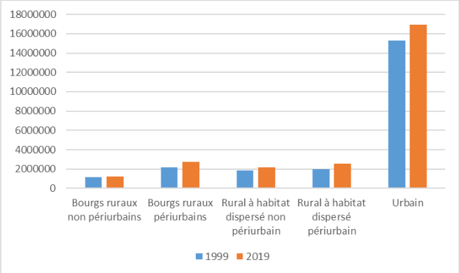
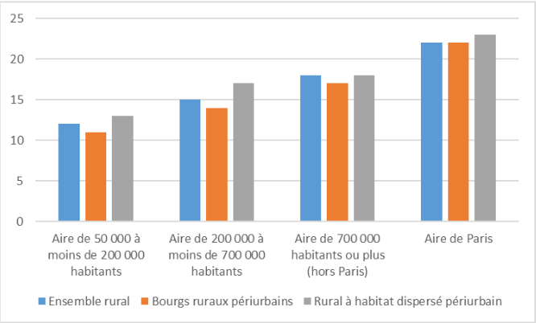
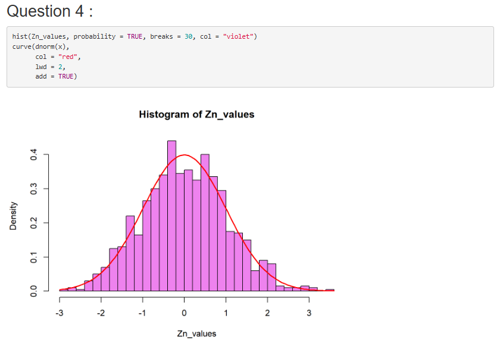

Compétence analyser
Analyser statistiquement les données
AC12.01 : Réaliser que les données ont une des caractéristiques propres à considérer
Lors de la SAE-106, nous avons étudié des données, et avant de les traiter, il nous a fallu étudier leurs caractéristiques. Pendant celle-ci nous avons travaillé avec le CPIE de Belle-Île-en-mer afin de réaliser une enquête
afin de connaitre leur impact sur l'île. Le projet s'est déroulé en deux phases majeures. Nous avons premièrement réalisé l'enquête, c'est-à-dire toutes les questions, l'ordre dans lequel elles passaient, faire en sorte que les réponses ne soient pas biaisées, etc.
Pendant la deuxième partie, nous avons étudié les réponses à cette enquête. Nous avons réalisé des études univariées, mais également des bivariées, avec croisement de variables. La manière pour les étudier n'est pas la même selon les caractéristiques des variables.
En effet, nous avons pris le temps d'étudier si les variables, si elles étaient quantitatives, étaient discrètes ou continues, et si elles étaient qualitatives, étaient nominales ou ordinales. Etudier les caractéristiques des variables nous a été très important
avant de prendre le temps de faire l'étude.
AC12.02 : Comprendre qu'une analyse correcte ne peut émaner que de données propres et préparées
Pendant cette même SAE-106, il nous a fallu, pendant cette même deuxième phase, nettoyer les données. En effet, sans données propres et préparées, alors les réponses étaient inexploitables. Il faut remettre le contexte, des gens ont répondu à une enquête et pas toujours de la meilleure des manières.
J'ai donc du faire en sorte de réadapter les réponses des répondants afin de pouvoir faire en sorte que les chiffres ne soient pas faussés.
Par exemple, une des questions posées dans l'enquête était : "Comment avez vous entendu parler de la CPIE de Belle-Île-en-mer ?". Il y avait plusieurs propositions
de réponses, dont une était "à l'école", et une autre était "autre", permettant au répondant d'entrer du texte libre. Un des répondants a répondu "en cours", j'ai donc du faire en sorte corriger sa réponse, et ce pour plusieurs dizaines de répondants. Sans cette étape, les chiffres obtenus auraient été faux.
AC12.03 : Comprendre l'intérêt des synthèses numériques et graphiques pour décrire une variable statistique
Les synthèses numériques et graphiques sont très importantes. C'est ce qui permet au lecteur de mieux comprendre certaines données, mieux comprendre le message que veut faire passer un rapport. Pendant la SAE-103, nous avons eu à critiquer un rapport et proposer des analyses supplémentaires, dans laquelle
nous avons étudié le sujet suivant : "Le trajet médian domicile-travail augmente de moitié en vingt ans pour les habitants du rural". Les données provenaient de l'INSEE.
En ce qui concerne les analyses supplémentaires, nous avons réalisé plusieurs graphiques sous Excel.

Population active en emploi résidant dans le rural

Distance domicile-travail des actifs en emploi résidant dans le rural selon la taille de l'aire d'attraction des villes (AAV) de résidence
Afin d'illustrer nos propositions, il était primordial d'utiliser des graphiques pour appuyer nos propos.AC12.06 : Appréhender la notion de fluctuation d'échantillonnage, notamment à l'aide de simulations probabilistes
Lors de la SAE-202 : "Estimation par échantillonnage", nous avons utilisé et comparé plusieurs modèles probabilistes. Nous avons récupéré un fichier de données et travaillé sur R.

Graphique réalisé sur R
Ici, nous avons un graphique nous permettant de visualiser une densité de probabilité.